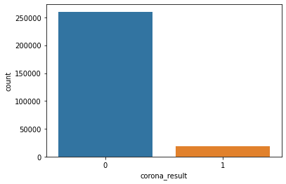
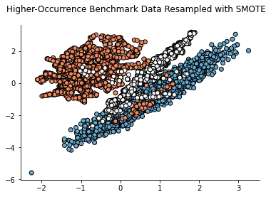
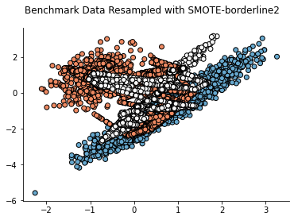
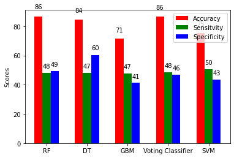

The healthcare industry is no exception. Machine Learning can play an essential role in predicting presence/absence of Locomotor disorders, Heart diseases and more. Such information, if predicted well in advance, can provide important insights to doctors who can then adapt their diagnosis and treatment per patient basis.
The classes in the sklearn.feature_selection module can be used for feature selection/dimensionality reduction on sample sets, either to improve estimators’ accuracy scores or to boost their performance on very high-dimensional datasets.
ADASYN (Adaptive Synthetic) is an algorithm that generates synthetic data, and its greatest advantages are not copying the same minority data, and generating more data for “harder to learn” examples.
ADASYN is based on the idea of adaptively generating minority data samples according to their distributions: more synthetic data is generated for minority class samples that are harder to learn compared to those minority samples that are easier to learn.
Visulation:
Sample Outcome:
SMOTE Oversampleing:
ADASYN Oversampling:
Accuracy compared :
